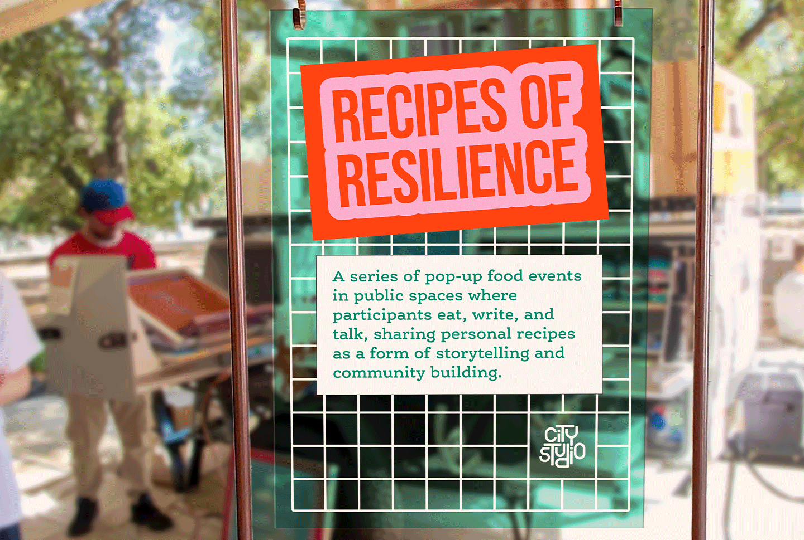
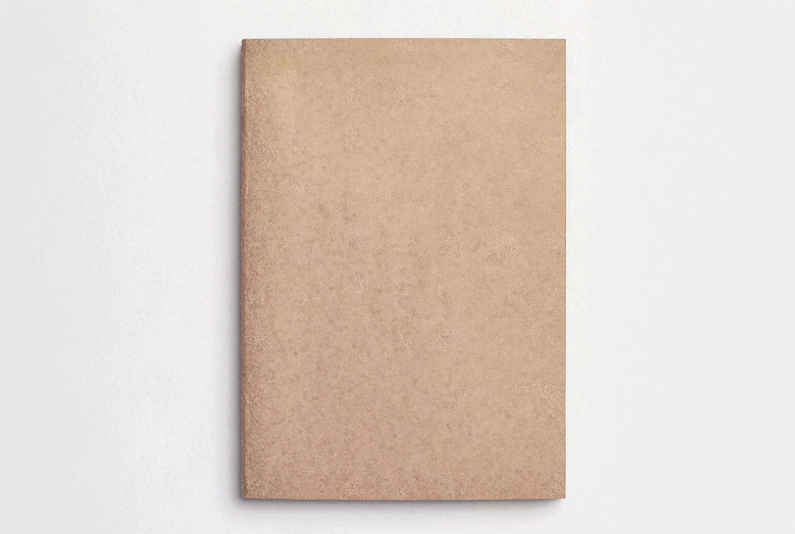

City Studio
Branding System
Design Lead:
Andrea Manrique
Designers:
Andrea Manrique, Ashton Landis
Client:
City Studio

City Studio is an intergenerational art project that fosters community and brings people from the Bay Area together through the joy of creating. Although their events and projects have carved out their own place in the community, the name “City Studio” wasn’t widely recognizable. There was significant confusion about who was hosting the events due to the collaborative nature of the organization.
We wanted to create an identity that showcases how creativity can enliven and disrupt the structured rhythm of urban spaces. To achieve this, we distilled these concepts into a city grid altered by circles that represent art and creativity. This idea is further expanded through the use of a vibrant color palette. The six contrasting colors create an explosive representation of the diversity and creativity found within the community.
The concept of sticker bombing is essential to City Studio’s identity because it embodies their activist nature while providing a practical and straightforward way to implement the brand. This method not only reinforces their commitment to accessibility and creativity but also ensures the identity can be seamlessly integrated into the everyday lives of their community.
It’s amazing how well you were able to distill our ethos. Something we have never been able to do! I love it! I think you really hit it!!!
-Amy Berk, City Studio
So many smart things that are happening here.
-Chris Treggiari, City Studio




